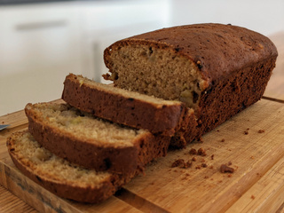

Back to home page
Pancakes

Description
A simple, moist banana bread made with ripe bananas. It's a great way
to use up bananas that are past their best.
Ingredients
- 3 ripe bananas
- 100g melted butter
- 100g brown sugar
- 1 egg
- 1 teaspoon vanilla extract
- 1 teaspoon baking soda
- 200g plain flour
- ½ teaspoon salt
Steps
- Preheat the oven to 180°C.
- Mash the bananas in a large bowl.
- Stir in the melted butter, brown sugar, egg, and vanilla extract.
- Add the baking soda and salt, then stir.
- Gradually add the flour and mix until just combined. Don't overmix.
- Pour the batter into a greased loaf tin.
- Bake for 50-60 minutes, until a skewer inserted into the centre comes out clean.
- Allow the banan bread to cool for 10 minutes before removing it from the tin.